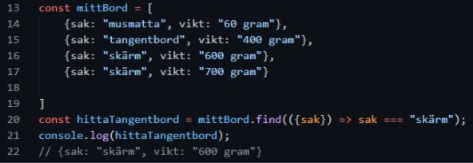
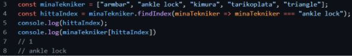
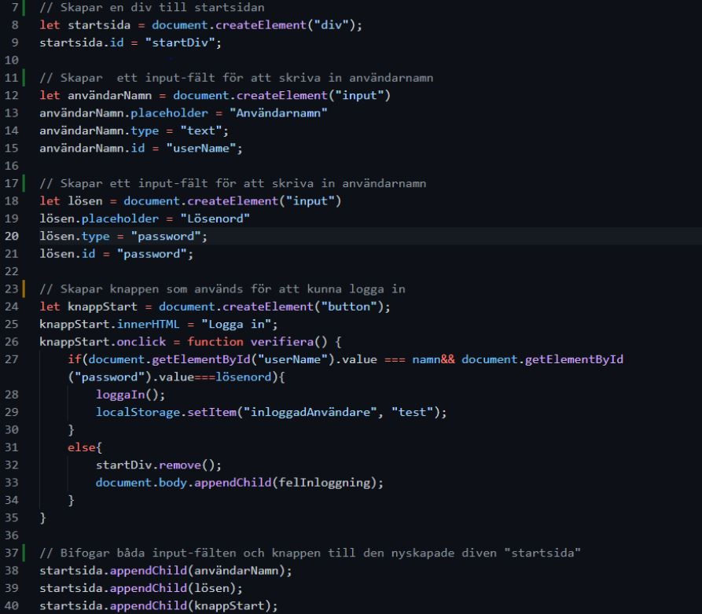

Måndag, 2021-10-25
Introduktion Node.js
Node är ett open source serverprogram som kan installeras på många olika typer av klienter som kan
hantera anropen för att hämta filer och data från databaser och sedan visa upp dem på t.ex. en
webbläsare. Node använder sig av programmeringsspråket Javascript.
Npm (node package manager) ett bibliotek till node där det finns flera olika färdiga plug-ins med
färdiga lösningar, tex. datumhantering mm. Underlättar för att inte behöva koda lika många funktioner
från grunden. Man installerar nya plug-ins genom att skriva npm install följt av namnet på paketet.
Det går även att tilldela olika “flaggor” per plug-in om man vill att det ska installeras på ett visst
sätt. T.ex. om man lägger till ett -g betyder det att installationen sker globalt och kommer att
tillämpas på alla projekt från start.
Express är det mest populära backend-ramverket för Node. Express underlättar hanteringen av de olika
byggstenarna som krävs för en API. Ger snabbt en grundstruktur så att vi kan komma igång med vår server.
Starta servern med “npm start” i console logen och ctrl + C för att stänga av servern.
Nodemon : nodemon är lite som liverServer är för vsCode. Så fort det sker ändringar i filerna så startar
den om servern automatiskt.
Routing , med routing menar man hur applikationen svarar beroende på vilken URL man besöker och den
specifika HTTP requesten. Svaret baseras också på vilken method som är kopplad din just den URLen. De
olika methods som finns är GET, POST, PUT och DELETE. Get hämtar data, post skickar data, put byter ut
befintig data och delete tar bort befintlig data.
Måndag, 2021-10-11
Fördjupning Javascript
Med hjälp av .find kan vi hitta ett element i en array. Find hittar det första elementet som matchar och slutar leta efter det. I exemplet nedan används arrow-function för att få ner mängden kod.
Om man vill veta index’et av det hittade elementet kan man använda findIndex() . Nedan använder jag arrow function for att hitta index'et på tekniken "ankle lock".
- Om du vill ha index’et av ett hittat värde: array.prototype.indexOf()
- Om du vill ta reda på om ett värde finns i en array array.prototype.includes()
- Om du vill ta reda på om något element uppfyller kravet använd array.prototype.some()
Moduler i Javascript
Moduler kan vi använda för att dela upp större arbeten. Vi kan till exempel dela in olika funktioner i olika .mjs-filer som vanligtvis läggs i en mapp som döps till “modules”. I mjs-filerna skapar vi t.ex. en function. När vi är klara med funktionen så behöver mjs-filen länkas till vår script.js-fil. Det gör vi genom att lägga till en “export” innan själva funktionen: export function printHw(){ console.log(“Hello World”);}. I vår script.js-fil behöver vi importera vår mjs-fil. Det gör vi genom att lägga till export, följt av namnet på funktionen och sökvägen till filen: import { printHw } from “./modules/namnpåfil.mjs”;. När vi väl har importerat funtionen kan vi anropa den precis som vanligt genom att skriva ut funtionen printHw();
Måndag, 2021-09-27
Javascript och dataformatet JSON
Vi skapar en JSON string med namn och tillhörande värde för varje namn på det här sättet: const
dataAboutNiklas = '{"name":"Niklas","age":30, "car":Opel}’. För att göra om våra JSON strings till ett
objekt gör vi: const myObj = JSON.parse(dataAboutNiklas);.
Vi kan även göra olika subkategorier i
varje nyckel på följade sätt: const dataAboutNiklas = '{"name":"Niklas", "age":30,
"car":”color”:”silver”, “seats”:”5”}’.
på så sätt kan vi få mer detaljerad iformation om en specifik kategori.
För att visa infomationen i
t.ex. en tom p-tag med id=message kan vi skriva: document.querySelector(“#message”).textContent =
myObj.car.color. Och då får vi ut svaret “silver” i p-tagen.
Måndag-Fredag, 2021-09-20 - 2021-09-24
Skapa ett CV och portfolio
Måndag-Fredag, 2021-09-13 - 2021-09-17
Skapa en inloggingssida
Den här veckan bestod främst av att fortsätta öva på saker från tidigare veckan och sedan implementera allt vi lärt oss på att göra en inloggingssida. Det mesta som jag använde mig av var just sånt jag skrev förra veckan men en stor och viktig nu detalj som jag gick använda var att skapa nya divar direkt från JS istället för att ha färdiga divar på html som jag sedan manipulerade med visible och hidden.
Fredag, 2021-09-10
Local Storage
Local Storage och Sesstion Storage är information som vi kan spara på webbläsaren. informationen som sparas kommer inte att försvinna när man laddar om sidan. Skillnaden på Storage and Session är att information som sparas som Storage (localStorage.setItem("name", "Niklas");) kommer att finnas kvar i webbläsaren trots att man stänger ner flik, webbläsare och t.o.m. datorn. Medan information som spara som Session (sessionStorage.setItem("name", "Niklas");) bara sparas så länge som användaren har uppe filken, annars försvinner informationen. informationen som spras i Storage sparas alltid i par, där den första parametern är key eller "kategorin" och den andra är värdet som ska sättas till kategorin. Känslig information bör aldrig sparas i Storage då den är lättåtkomlig. Känslig information är bättre att spara på en server där den inte kan nås lika lätt. Med Storage kan man göra flera olika saker, t.ex. clear, getItem, key, removeItem, setItem osv.

Torsdag, 2021-09-09
Övningsuppgifter
Idag gjorde jag bara övningsuppgifter hela dagen. Övningsuppgifterna var; Manipulera DOM, Funktioner, Loopar och If-statements.
Onsdag, 2021-09-08
Object Properties och Methods
Man kan nå innehållet i ett Object genom att skriva namnet på object följt av en punkt och sedan variabeln inom objektet du vill nå: objectName.propName t.ex. Man kan också skicka hela object till en function och på så sätt får den function man skickade objektet till tillgång till hela innehållet av objektet istället för enstaka strings eller numbers. Till skillnad från när man ändrar t.ex. en string i en funcion där function inte har tillgång till informationen utanför och därför inte kan ändra den så kommer inte att uppdateras om man skulle kalla på informationen med text console.log. Däremot om man skickar ett object till en function så kommer informationen utanför function att uppdateras och skulle man skriva ut tex console.log(person.age) så kommer den att uppdateras och få ny info från function. Det finns massvis med inbyggda objekt som redan är färdiga för att användas - tex Date, Math, String, och Number. Alla dessa finns listade på MDN Web Docs.
Document Object Model (DOM) är det den struktur som hela html-sidan är uppbyggt av själva "trädstrukturen" av elementen. Med hjälp av DOMen kan vi nå sepcifika element i en html-fil från JS: document.getElementById(idName);. När vi väl har hämtat ett element från html-filen med hjälp av DOM så kan vi göra massa olika saker med den – vi kan style den element.style.cssProp = “value”, vi kan identifiera olika händelser, tex clicks och vad som ska hända efter ett tex click: element.addEventListener(click, funcion), vi kan även visa eller gömma DOM-element med hjälp av klasser. Vi skapar en klass som gömmer ett element och sedan använder vi oss av element.classList.add(className), element.classList.remove(className) och element.classList.contains(className) och med hjälp av dessa kan vi skapa en if else-function som tar bort eller lägger till classen baserat på vilka klasser elementet redan har.
Arrays
Vi skapar arrays genom att skriva const arrayName = [1, 2, 3]. För att komma åt specifik information i en array skriver vi arrayName[index], där index motsvarar vilket plats I arrayen vi vill hämta informationen från. Första informationen börjar alltid på 0. Vi kan lägga till och ta bort information med hjälp av push() och pop(), där push lägger till information i slutet av en array medan pop tar bort information från slutet av en array. Shift och unshift gör samma sak fast i början av arrayn. Där shift tar bort första innehållet av en array medan unshift lägger till information till början av arrayn.
Slice() skapar en ny array av en redan befintlig array och kopierar information till den nya arrayen, men lämnar arrayen den tar informationen ifrån oförändrad. Splice kan användas för att ta bort information från en array genom att skriva splice(index, deleteCount) alltså var den ska börja och hur många “steg” den ska ta bort. Det går även att använda splice för att lägga till ny information eller byta ut genom att skriva splice(index, deleteCount, newItem(s)) sätter man deleteCount till 0 så kommer den att endast lägga till information. Vi kan leta och loopa arrays med hjälp av indexOf() och find(). Och vi kan filtrera våra arrays och skapa nya med den filtrerade informationen med hjälp av filter(). Och för att kalla på en function i en array använder vi oss av forEach där functionen går igenom varje elemenet i den valda arrayen. Vi kan även skapa en array av information som vi har extraherat från html-filen med hjälp av document.getElementByClassName(). Fungerar på samma sätt som när vi extraherar information via IDs men nu på flera element samtidigt.
Scope and Hoisting
Alla functions kan nå alla variabler utanför functionen men inte tvärt om. Om vi använder oss av lokala variabler innuti en function och vi har samma namn på variabeln som på andra ställen så kommer function att börja leta efter variablen först lokalt i function och sedan gå “ett steg ut” i taget tills den hittar namnet på variabeln. Vi kan använda oss av “use strict”; längst upp i vår JS-sida för att garantera att vi behöver deklarera varje ny variabel som läggs till.
Tisdag, 2021-09-07
Javascript används för att interagera med hemsidor. Precis som css så kan man skriva JS direkt i html-dokummentet men standarden är att man skriver det i ett separat dokumment precis som med CSS. JS är till skillnad från html och css, ett programmeringsspråk. Används för att interagera med htmln i webbläsaren och för att kontakta serverar. JS kan köras direkt i webbläsaren och uppdaterar informationen på sidan utan att behöva ladda om. De andra programmeringsspråken kräver att man gör det på servern som sedan skickar information till webbläsaren.
Grunderna i JS
<script src=”./filnamn.js”></script> används för att länka till JS-filen från html-filen. Script-elementet används allra längst ner EFTER body-elementet. Detta för att hela sidan ska ladda utan JS först. Det går att använda whitespace I JS men bör endast används för att förtydliga koden. I consolen F12 går det att ta fram felmeddelanden i din kod. Där står både vad det är som är fel och i vilken fil samt vilken rad i filen felet ligger. JS är case sensitive så det gäller att använda stora och små bokstäver på rätt ställe. Man kan kommentera i koden utan att det syns på hemisdan med hjälp av // och /* */.
Variabler och Konstanter
Vi deklarerar variabler med “let” och namnet på variabeln måste börja med _, $ eller en bokstav. Vi kan också deklareta med hjälp av “const” om det är en variabel som vi inte kommer vilja ändra på i framtiden. Varibeln “var” brukade användas men bör inte används mer eftersom det gör felsökning mycket svårare.
Typer och operatorer
Det finns olika typer av variabler tex; Number där vi endast använder oss av nummer. String där vi kan skriva vad som helst så länge texten är mellan “”,’’ eller ``. Vi kan konvertera olika typer av stings och numbers med hjälp av variable.toString() och Number.parseFloat(“123”). Får vi meddelandet NaN (not a number) så har vi troligtvis glömt att göra om från string till number. Booleans är den typ som endast kan vara antingen false eller true. Vi använder oss av utropstecknet för att sätta motsatta värdet, så true är samma sak som !false och vice versa. Har vi en varibel som ska nollställas så behöver vi sätta värdet till null. Det är för att om en variabel inte har något tillsatt värde från början så kommer JS automatiskt att tilldela den unidentifiend. På så sätt kan vi enkelt se skillnad på om det är vi som har missat att tillsätta ett värde eller om det är JS som har upptäckt att vi gjort något fel. Object och symboler används precis som när vi lägger till en varibel men vi följer upp med {} där vi kan definiera flera saker innuti ett objekt till skillnad från en vanlig variabel där vi endast definier en sak i taget.
If else används för att ta reda på om ett visst värde är sant eller falskt och därefter skriva ut information baserat på vilket villkor som uppfylls. Villkoren kan uppfyllas på olika sätt tex 0, false och null är falska och “0” alla nummer utom 0 och true är sanna. Använd alltid === när du vill jämföra olika värden med varandra och !== om det inte ska vara samma värde. Man kan skriva if-else på ett mer kompakt sätt genom att använda sig av The Ternary Operator: (condition) ? (true-statement) : (false-statement).
Block scope är när man deklarerar variablarna innuti ett block så att man kan isolera den från resten av koden och på så sätt kan den inte interagera med kod utanför blocket.
Det finns olika sorters Loops: For, while, do...while. Väldigt viktigt att loopsen stänger sig själva genom att uppfylla ett krav så att det inte blir en oändlig loop.
Funktioner
Funktioner definieras med hjälp av function name(){} eller med let fn = function(){}. Vi kan skicka med information till en function genom att fylla i information mellan paranteserna: functionName(1, 2, 3);. Funtions kan även ge tillbaka information med hjälp av return value; i slutet av function. Function scope är den bredd av information som functionen kan nå. Den kommer alltid att prioretera information som är innuti sig själv först. En function kan nå information utanför sig själv medan t.e.x. en console.log inte kommer kunna nå en variabel som är innuti en function. Functions kan bl.a. användas för att modifiera inforamtion på en hemsida genom att hämta ny information.
Måndag, 2021-09-06
Idag har större delen av dagen gått till att studera studieteknik. Jag hann även påbörja Introduktion till Javascript (vecka 2 och 3) där jag bland annat fick lära mig: URL=Uniform Resource Locators som är unika addresser till sidor. Http=Hypertext Transfer Protocol som är den mekanism som tar information till och från webbservern till webbläsaren. Samtliga dokumment samlas på en webbserver som sedan kan nås med unika URLs från en webbläsare.
Html är standarspråk för webben. Html-filer är uppbyggda av element och attribut. Samtliga html-dokument har en !DOCTYPE html, html, head och body-taggar. Html-filer kan skrivas på olika sätt. I ett text-dokumment, i en IDE (Integrated Development Environment) och även med hjälp av olika ramverk i olika språkkod som automatiserar html-text.